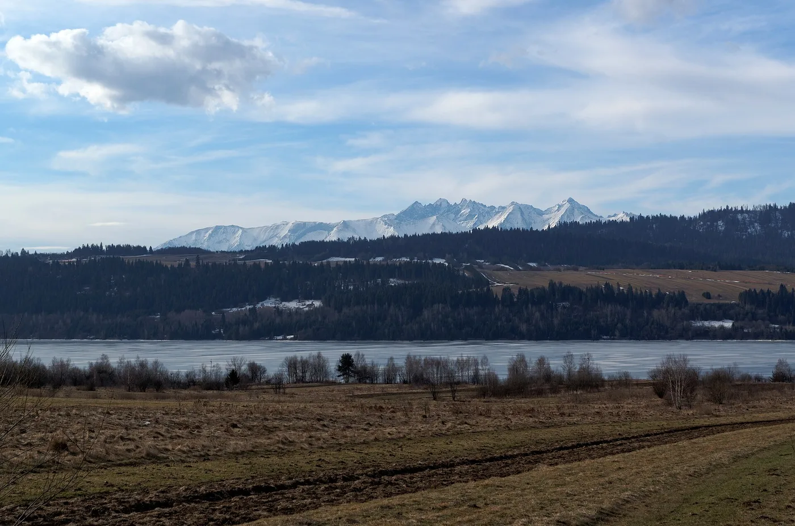

01 · Best overallLake Czorsztyn
Niedzica-Zamek or Kluszkowce
Drive110–130 km
Time2–2½ h
Weekend1,300–2,300 PLN
Two castles, cruises, kayak hire and one of southern Poland’s most scenic cycle routes. The strongest choice for a weekend that feels larger than its driving time.
Use a currently designated bathing location; this reservoir is better for mixed activities than an all-day beach holiday.
Current cycling information →